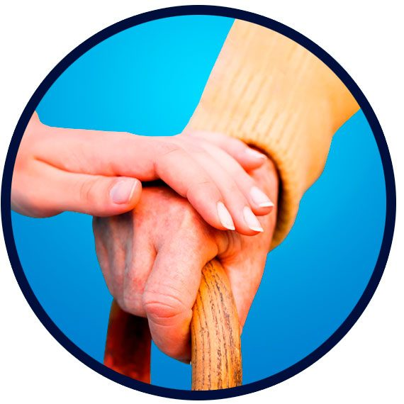
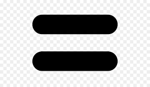
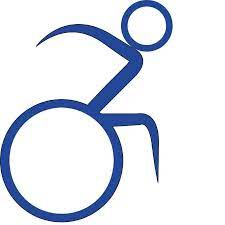
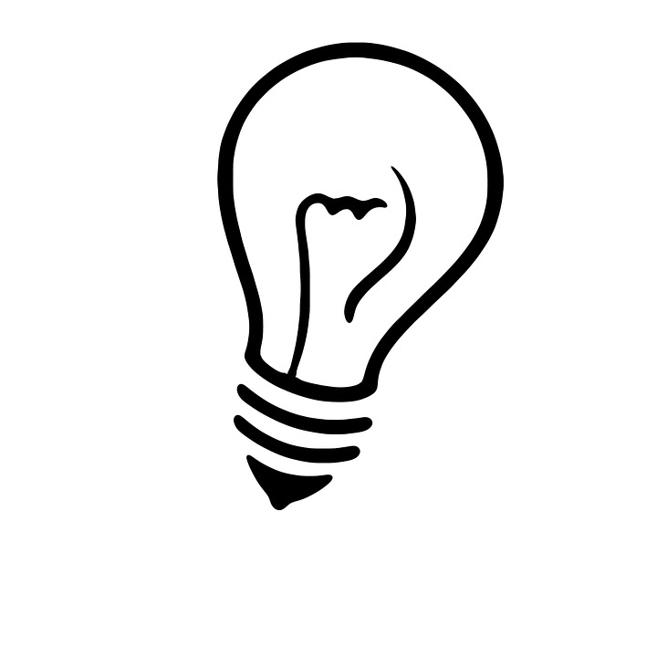

O que é Acessibilidade Digital?

A Acessibilidade Digital é a melhoria do design da usabilidade dos websites, através de técnicas e ferramentas que melhorem a experiência de usuários com necessidades especiais. Assim, reduz as barreiras e permite que pessoas com diferentes tipos de deficiência consigam acessar sozinhas websites e informações disponíveis na internet. Sem a acessibilidade, os usuários perdem autonomia e precisam contar com a ajuda de terceiros para executar tarefas simples e essenciais.
Benefícios da Acessibilidade Digital
Em conformidade com a legislação nacional e regulamentações
globais.

Promove a igualdade social.

Ampliação do público
Humanização e impacto da marca

Inovação
Fidelização dos usuários e clientes
Benefícios da solução tecnológica da EqualWeb
- Melhoria no SEO e no ranqueamento nas ferramentas de busca
- Fácil navegação para um público mais amplo e diversificado;
- Melhor conversão do website: maior público e maior receita;
- Maior tempo médio de visualização das páginas;
- Manutenção simples e ágil do website;
- Compatibilidade com todos os dispositivos móveis e plataformas de desenvolvimento;
- Tecnologia israelense com uso de Inteligência Artificial;